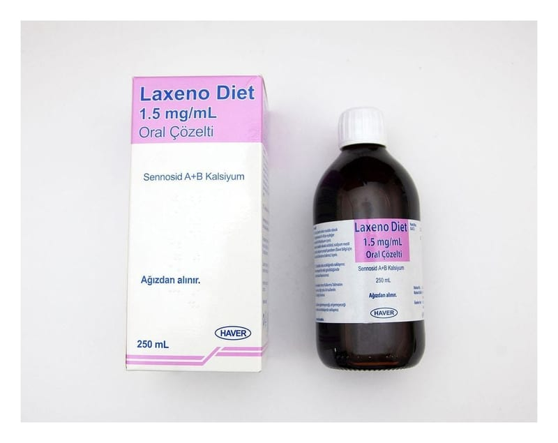

Laxeno Diet 1.5 mg/ml Oral Çözelti, 250 ml

Ne için kullanılır
KT · Bölüm 1LAXENO DİET, kahverengi renkte çözelti formunda bir ilaçtır ve 5 mL’sinde 7.5 mg sennozit A+B ihtiva eder. 250 mL’lik renkli şişede ve ölçü kaşığı ile birlikte sunulur. LAXENO DİET, “kontakt (uyarıcı) laksatifler” denilen, kabızlık tedavisinde kullanılan bir ilaç grubuna dahildir. Etkisini; alındıktan sonraki 5-6 saat içerisinde göstermeye başlar. Çeşitli tipteki kabızlıklarda, ameliyat öncesinde ameliyata hazırlamada ve radyolojik incelemelerden önce bağırsakların boşaltılması amacıyla kullanılır.